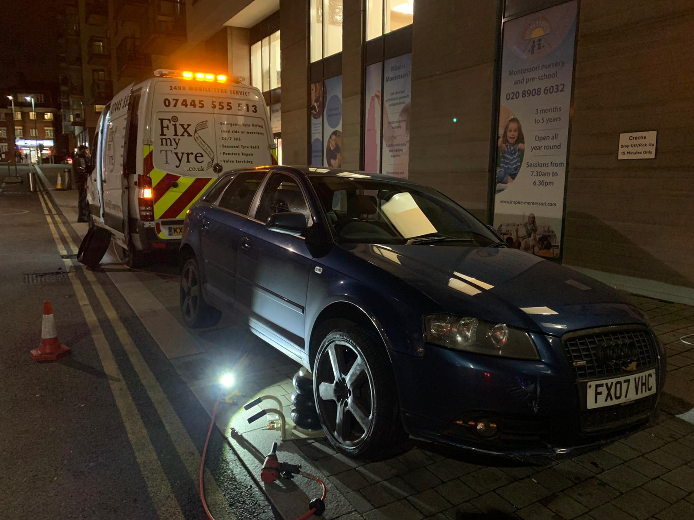
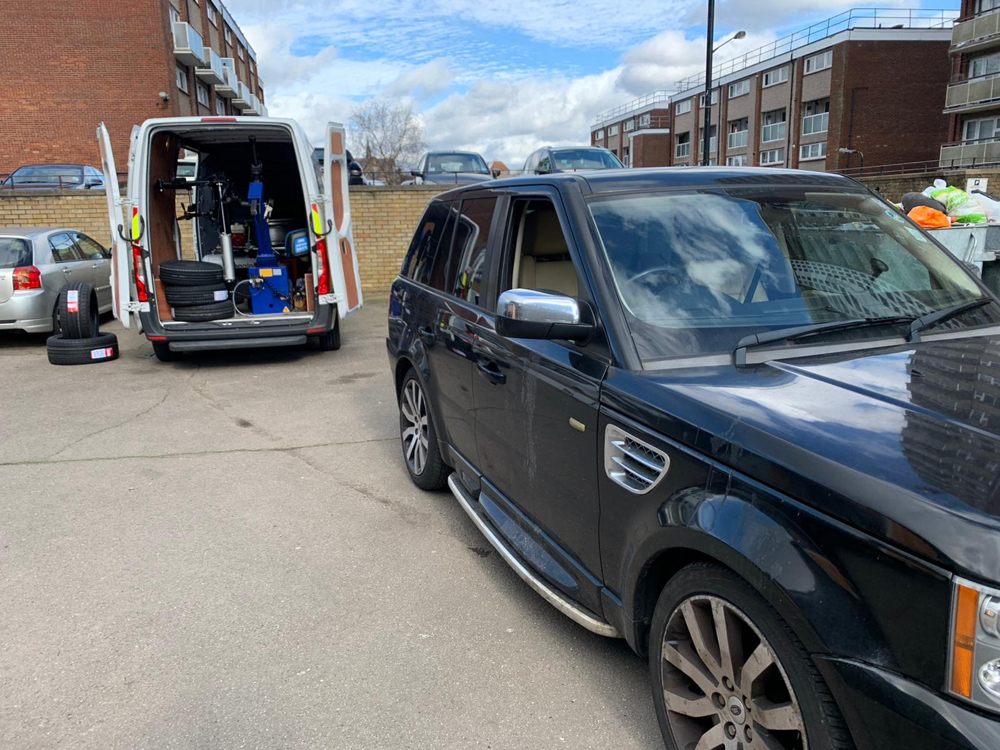
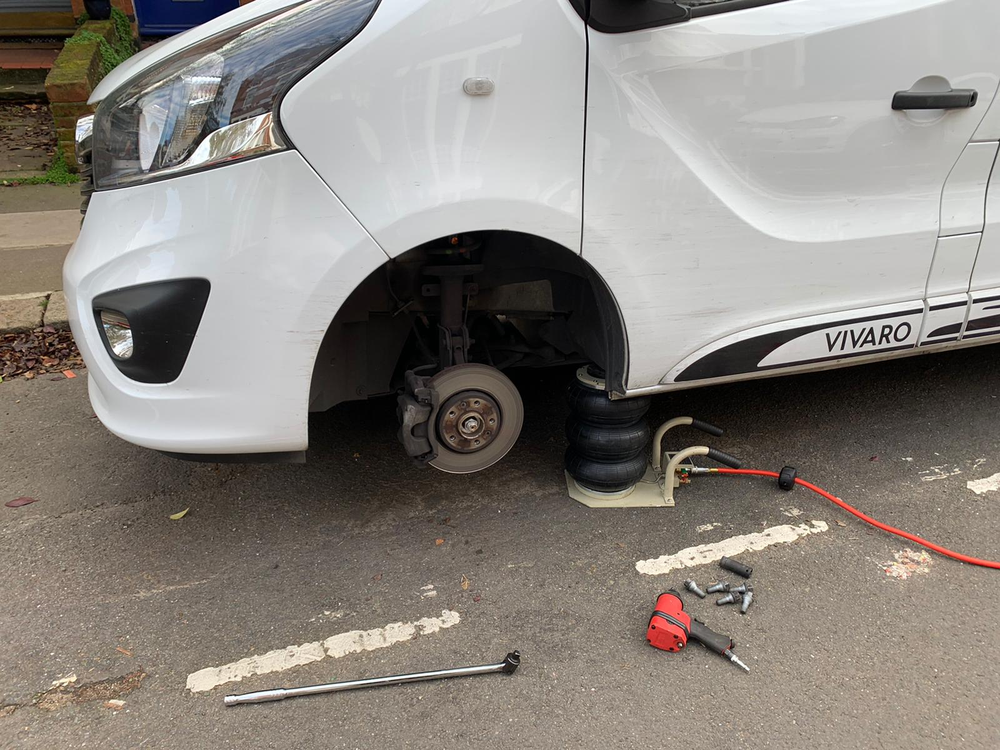
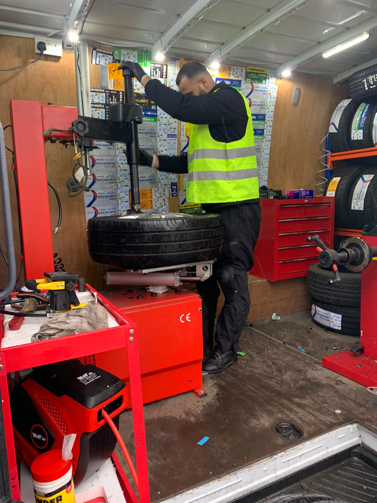

Emergency Tyre Fitting
Blowout or flat tyre in Milton Keynes? We come to your location to help get you moving again, subject to availability.
Read more
Our Milton Keynes team covers the city centre, Bletchley, Newport Pagnell, Wolverton and surrounding areas. Whether you're stuck at the roadside, parked at home or need a set fitted at work, one call gets a fully equipped van heading your way — typically within 30 to 60 minutes.
Every service we offer is available across Milton Keynes and the surrounding area, day and night.

Blowout or flat tyre in Milton Keynes? We come to your location to help get you moving again, subject to availability.
Read more
Get new tyres fitted at your home, workplace or roadside in Milton Keynes, without needing to visit a garage.
Read more
Replace worn, damaged or unsafe tyres at your Milton Keynes address, whether you need one tyre or a full set.
Read moreSend your location on WhatsApp or call us to arrange mobile tyre assistance in Milton Keynes and the surrounding areas.